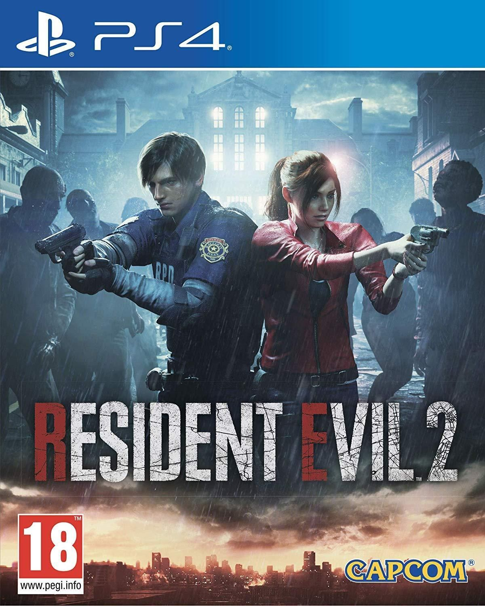

Resident Evil 2 Remake es parte de una trilogía de juegos que detalla los orígenes de la historia y la mitología de la serie. La acción comienza poco después del primer juego, marcando el inicio de un desastre a gran escala en Raccoon City debido al brote de los virus T y G.
